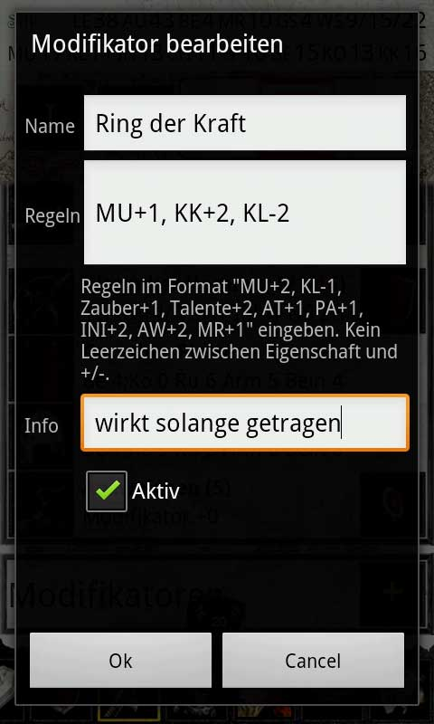

Um auch auf im Regelwerk nicht vorgesehene Modifikatoren reagieren zu können, kannst du beliebig viele Modifikatoren für deinen Charakter definieren.
Um einen Modifikator zu erstellen klicke in der Kampfübersicht auf das Plussymbol neben der Modifikatorüberschrift.
Du kannst bei einem Modifikator beliebig viele Regeln (durch Beistriche getrennt) hinzufügen. Eine Regel besteht immer aus einem Bezeichner für den Wert der angepasst werden soll und einer Zahl, die angibt um wieviel der Wert verändert werden soll z.B.: MU+5 oder AT-2. Zusätzlich zu den Abkürzungen für die einzelnen Werte (MU, IN, KL, AT, PA, MR, AW, ...) kannst du auch die Schlüsselwörter Zauber, Talente und Liturigen verwenden.
